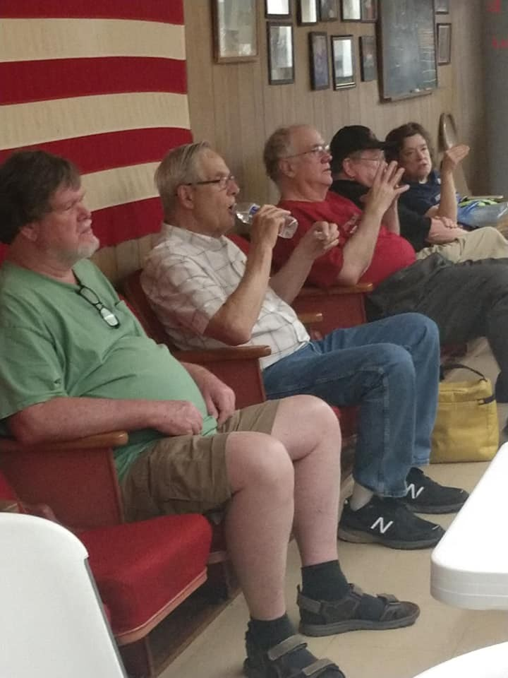
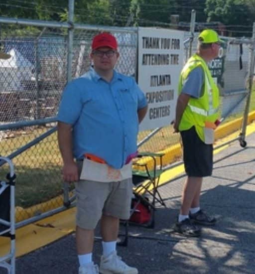
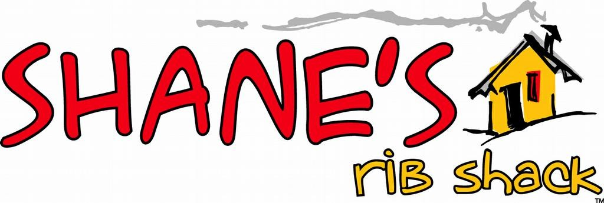

Summer 2019 TOTR
Newsletter Of The Alford Memorial Radio Club
Field Day Frenzy
SSB Phone CW
PSK31 FT8 GOTA
Antenna Launching
Hoisting the Beam
Droid Flying
BBQ, Pudding,
Corn Casserole,
Mac n Cheese,
Fried Chicken,
Watermelon Bowl
Fruit Salad
10M, 15m, 20m,
40m, 80M
Satellite Passes
And Cat Naps….
Summer 2019 Contents
President’s Notes
Meeting Information
Membership News/ July Birthdays
Instant Recognition– Morse Code
Field Day Pictures
AMRC Officers
Calendar
August Birthdays/ Peach Corner Recipes
Net Numbers// Dog Show
July 2019 President’s Notes
Field day was a great success. From our
spend that entire time making this event the
new location, we operated as 5A on emer-
best that it can be. This is the fund raiser
gency power. Jim did a great job on the
that supports our club, so please plan to help.
BBQ and my thanks to all that brought the
It’s time to start thinking about the officers
other food. Being in an air-condition
that you want to oversee the Alford Memorial
building was a blessing. We appreciate the Radio Club for next year. The nominating
Stone Mountain Lodge #449 for their
committee will have a slate of officers
assistance. Many of us are gathering at the
selected by the September meeting and the
lodge on the first Saturday of each month
floor will be opened for additional nomina-
to enjoy a great home cooked breakfast. Be
tions at that meeting. Then the elections will
sure to join us.
be done at the October meeting.
We made just over 700 contacts, with 268
See you at the next meeting.
of those being digital contacts, while the
CW contacts came in at around 192 and
phone contacts close to 267. While the to-
Mike, KK4KHS
tal contacts were not as high as recorded in
the past CW and digital were much higher
than last year. The GOTA (Get On The Air)
station recorded over 100 contacts as well.
Great job everyone and thanks for the
many hours of work put in by our Field Day
crew. It sure was fun.
Next up is Hamfest November 2nd and 3rd
at the Gwinnett County Fair Grounds, so
mark your calendars. The Hamfest steering
committee has been meeting for the past
several months. We’re very excited about
some new strategies to continue to improve
our Hamfest. We have some great forums
already lined up, but we are going to need
help from every one of our club members to
pull off the best HamFest in Georgia. And I
mean everyone. I urge you to set aside
some of your time sometime. The Hamfest
work starts beginning on Thursday October
31st and ends 6PM on Sunday November
2

August 2019 President’s Notes
My new issue: Age-Activated Attention
Hey! What’s the TV remote doing in the
Deficit Disorder goes like this ...
kitchen? Aaaaaagh! I’d better lake it to
I decide to wash the car and start toward the living room, because we’ll never think
the garage, when I notice the mail on the to look for it in the kitchen tonight. I take
table. I figure I might as well go through the remote out to the coffee table and find
the mail before washing the car. I put my that the living room is a bit untidy.
keys down on the desk, sort the mail, and I go around arranging cushions and throw
discard the junk mail.
pillows. Then I’m off down the hall...what
As I discard the junk mail, I see that the
the heck was I planning to do?
garbage can is full. I lay the bills down on End of day: The car isn’t washed, the bills
the desk and pick up the trash can. I
are unpaid, the flowers aren’t watered, the
figure that since I’ll be going near the
checkbook still only has one check, and
mailbox while taking out the trash, I may now I can’t seem to find my car keys! I
as well pay these few bills first. Now
don’t seem to have gotten anything done
where did I put my checkbook? Ah, here it today, but I just can’t figure out why be-
is! Oops, there’s only one check left.
cause I KNOW I WAS BUSY ALL-DAY
My extra checks are in the other room.
LONG!!!
Oh! There’s the soda I was drinking
I realize this is a serious condition and
earlier! Hmmm, I guess I’d better take it that I’d better seek help. But first, I think
to the kitchen and discard it.
I’ll check my e-mail.
On the way to the kitchen, my flower
S
o put on your calendar, the second
arrangement catches my eye and I realize Thursday in each month, AMRC meeting.
it needs more water.
This will ensure that you will never forget
I pour the soda down the sink. As I wipe a it.
spot off the counter, I see my glasses on
LOL– Yeah Right.
the windowsill. It’s about time. I’ve been
looking for them all morning!
See you at the meeting,
I guess I’d better go put them away so I
can find them again later. But first I’ve
Mike Smith, KK4KHS
got to add water to my flower arrange-
ment.
3

Next AMRC Club Meeting
September 12, 2019
Program TBA
Fellowship Hall Annistown Road Baptist Church
Park in back of the church.
AMRC Repeaters
146.760– On St. Mtn. approximately 110 ft up the TV
transmission Tower. ECHO LINK available on the 76.
441.8125– on Stone Mountain under the dome.
145.450– Exchange Park
444.250– Exchange Park
224.760– Exchange Park
Repeater Manager Barry Kanne W4TGA
radio.w4tga@gmail.com
HAMS HELPING HAMS
Helping other HAMS get
on the Air since 2017.
Inquire on Groups.io if
you want to help.
4
AMRC MEMBERSHIP Happy July Birthday from
August 1, 2019=139
AMRC
JUL 02 WB4WTN Bill Cherepy
We Welcome Our New Members!
Wayne Robertson K4WK
JUL 09 KJ4AKA Robert Swanson Jr
Shane Bailey KN4SUV
JUL 09 KN4BYB Allan Hicks
Michael MacLeod KN4VSI
JUL 11 N2RRF Agnes Stevenson
JUL 12 KI4FWX Amy Hale
Become a member of AMRC or renew by
JUL 15 KJ4TZP Austin Harris
visiting our website http://totr-
radio.org/membership/memapp.htm
JUL 16 K4IO Burt Cram
Click here.
JUL 17 KB4VEO Lori Fain
To Make Changes to your membership
(new address, email, or phone number)
JUL 17 KK4SPS Martha Ford
please email
JUL 18 KE4SFO George Coletti
Steve Garrison
JUL 21 WB2PSB Zargon Zargon J
Membership Chairman
Steve.n4tty@gmail.com
UL 21 WD4CCZ Charlie Broome
Update or renew your amateur radio li-
JUL 22 KI4FWY Rhett Aultman
cense with the FCC at their website for
free http://wireless.fcc.gov/uls/
JUL 22 KE4AXE Mary Ann Flack
index.htm?job=home. Click Here.
JUL 27 KB4KFT Bill Perkins
Update or renew your ARRL
membership at their website http://
JUL 30 KN4LFJ Jose Gonzalez
www.arrl.org Click here
August Birthdays Page 12
Club Dues are Due in January.
Dues help support our repeaters and
club activities. Thank you for promptly
renewing.
Steve Garrison
N4TTY
Membership Chair
5
Instant Recognition Morse Code
by Nancy Kott, WZ8C
Some Hams are content to rag chew at slow speeds and don’t have a desire to go faster. This is
fine! As long as you are getting on the air and having fun with Morse code, that is what is important.
However, many frustrated Hams want to go faster. “How can I increase my code speed?” is the most
commonly asked question. After learning the alphabet, Hams seemingly reach a “plateau”, a period
where they can’t make further progress. Usually they can copy 5 or 6 WPM fairly well, but they go to
pieces above 7 or 8 WPM. The answer is simple: they have not adequately learned the alphabet.
They may deny this is true since they obviously must know the characters to copy 6 or 7 WPM.
However, to copy CW at higher speeds requires more than merely recognizing characters: the
recognizing must be instantaneous. By instantaneous recognition I mean the ability to recognize a
CW character within a half-second after hearing its completion. Bill Pierpont, N6HFF, author of
“The Art and Skill of Telegraphy,” puts it this way: “Associate the code signal with the printed letter
so intimately that when you hear or think of one, the other immediately pops into mind. Instant
recognition is what we strive for. We must develop that patient, receptive state of mind that allows us
to recognize each character instantly and accurately as soon as it has been completed.”
How do you find out if you have instant recognition? One way is to play a code practice
program. As each letter plays, can you immediately say or write the letter? Or do you think
“ummm...A” or “...dit dah...ummm...A”? If there is a split second delay in your recognition of the
letter, then you haven’t learned that letter to the point of instant recognition. A split second may not
seem like much; it’s not going to make much difference when you’re going 5 or 10 WPM but when
you get to higher speeds it’s going to mess you up. The time it takes you to think “...ummm” before
recognizing the letter will be long enough to make you miss the next letter after it. It will snowball to
the point where you lose whole words. You may get enough of it to make sense of the copy, but you
will not feel comfortable chatting on the air. It might discourage you enough to make you want to
give up because you feel you are practicing and practicing and aren’t making progress.
I’m sure you’ve heard the stories of legendary CW operators who can carry on a high speed-
chat on the air while drinking a cup of coffee and fielding questions from people in the room. These
operators are comfortable with the code because it’s so familiar they don’t have to think about what
they’re copying. Irene, WO8E, feels she is at a plateau. Even though she has passed the 20 WPM test
and has Instant Recognition and her Extra class license she doesn’t feel comfortable carrying on a
conversation at 20 WPM. We wondered if she had instant recognition, maybe she didn’t and this was
holding her back. She listened to the code characters one by one and sure enough there are a handful
of characters that she has to think about before identifying them! Once you find you don’t have
instant recognition, how do you acquire it? There are two ways: the hard way and the easy way. The
hard way is to proceed as you are doing, eventually instant recognition will come to you. With some
people it may take years. The simple way is to go back to the alphabet and learn it as it should have
been done in the first place. (con’t page 7)
6
Your first reaction is probably to think it would be a waste of time because you may feel you’ve
already memorized the alphabet. But, you’ve proved that you don’t really know the letters because
you don’t have instant recognition of them yet. Once properly learned, the alphabet will produce
faster speeds quickly and easily. The key is to over learn the alphabet so it becomes so ingrained in
your brain that it’s second nature. In psychology there is a “Law of Contiguity”, which says that if two
events occur no more than one-half second apart, the mind associates the two events. This means
when a Morse code character is heard and it is followed within one-half second by a spoken letter of
the alphabet, the mind will associate the Morse sound with the translation. The association works
automatically, as a workman thinks “lunch” when he hears the noon whistle blow. But we quickly
forget things learned by this association method, so we need to “over learn” them to make the code a
part of our permanent memory.
Over learning occurs when we continue to practice something we feel we have already
learned. However, boredom soon sets in when we go over and over material we think we’ve already
mastered. This is why practice sessions should be short, two or three minutes at a time. Short, fre-
quent practice sessions produce more results than fewer longer sessions. Concentrate, stay focused
on your goal! Determine what characters you don’t recognize immediately after they are played and
concentrate on these. You should be able to say the name of the character as the last dit or dah is
heard. If you don’t, add it to your list. You can relearn the alphabet by using basic code tapes, listen-
ing to slow code on the air or even whistling it to yourself. It would be ideal if you could make your
own tape concentrating on your problem letters, but don’t omit the letters you already know.
Remember, our goal is to over learn the code: all the reinforcement you can get is good for you.
The key to success with this method is to say the letter within a half second of hearing it;
hearing it and quickly saying it over and over and over. The INSTANT you recognize the letter being
played, say it out loud as fast as you can. Use spare moments during the day to whistle the code
under your breath and quietly say the letter to yourself immediately afterwards. Do it while driving,
sitting at your desk at work (no one will even suspect!), during commercials while watching TV,
anytime you think of it. Spending just a few minutes many times a day will work wonders. By
tapping out the letter with your finger as you say the letter aloud or whistle it, you involve more of
your brain’s memory centers. This increases your learning efficiency by reinforcing instant
recognition with what is called “motor memory”.
Doing a practice session right before you go to sleep has also been proven to help your brain
commit material to memory. When you find that you have instant recognition with the letters. Your
code speed will increase effortlessly. Then you will get to the point where you can work on having
instant recognition with common words.
Nancy Kott
Silent Key
WZ8C
7

8


9


2019 AMRC Officers and Committee Chairs
Mike Smith KK4KHS
Steve Vogel W4PSV
President
Public Information
smithrm71@yahoo.com
svdec@bellsouth.net
Greg Mann KM4RKT
Vice President/ Apparel Mgr
Steve Garrison N4TTY
km4rkt.greg@gmail.com
Membership
Steve.n4tty@gmail.com
Anthony Acker ND4AA
Secretary
Zargon W4PSB
Field Day Chair
Zack Buersmeyer KN4HKB
Treasurer
Gretchen Mann W1MKW
Totr Newsletter Editor
Gene Blackburn N4UJ
gretchelby@gmail.com
W4BOC Trustee
g.blackburn@ieee.org
Frank Haynes KV4SP
Barry Kanne W4TGA
VE Team Chair
Repeater Manager
barry.kanne@gmail.com
If you would like to serve on a
committee or assist a chair per-
son in their work, contact Mike
Jim Penland N4RAR
KK4KHS. It is a great way to
DeKalb ARES EC/ Counsel
make contacts and learn. Don’t
jwpenland@jwpenland.com
be shy.
10
August 2019
Sunday
Monday
Tuesday
Wednesday Thursday
Friday
Saturday
1.
2.
3. Breakfast
7AM Hardees
Turnip
Turck Net
11pm
4.
5.
6.
7
8.
9.
10.
AMRC
Emm Comm AMRC
Breakfast 7am
Sunday
Rag Chew
Monthly
Hardees
Night Net
Meeting
8pm
Turnip
7pm
7pm
Truck Net
11pm
11.
12.
13.
14.
15.4AMRC
16.
17. Breakfast
AMRC
Emm Comm Monthly
7am Hardees
Sunday
Rag Chew
Meeting
Night Net
7pm
8pm
Turnip
7pm
Truck Net
11pm
18.
19.
20.
21.
22.
23.
24.Breakfast
AMRC
Emm Comm
7am Hardees
Sunday
Rag Chew
Turnip
Night Net
Truck Net
8pm
7pm
11pm
25.
26.
27.
28.
29.
30
31. Breakfast
AMRC
Emm Comm
7am Hardees
Sunday
Rag Chew
Turnip
Night Net
8pm
Truck Net
7pm
11pm
11
August 2019 Birthdays
It Does Not Work!
Louis Vermond, VE3AWA
AUG 01 KB4UVV Dave McWhirter
"I don't know if it works" = It does not work.
"I am unable to test the item." = It does not work.
AUG 02 KA4IAO Wes Akins
"I don't know anything about ham gear." = It does
not work.
AUG 03 KI4VWG Janice Smith
"Powers on." = It does not work.
"Lights up." = It does not work.
AUG 06 Margaret McWhirter
"I am afraid to plug it in." = It does not work.
AUG 07 KM4HZP Ron Koon
"It made sounds." = It does not work.
"I do not have an antenna to test it." = It does not
AUG 08 KM4OXD Raul Perez
work.
AUG 09 KJ4WIB Ann Popoff
Peach Corner Recipe.
AUG 09 K4GZZ Karl Phillips
Ingredients:
AUG 10 KM4HJ Peggy Vaughn
2Cups All Purpose Flour
AUG 11 KK4NZE Mike Ford
2.5C sugar
AUG 12 K4SWV John Dreggors
4tsps baking powder
AUG 14 K4MEM Kim Smith
1C whole milk
2Tbs canola oil
AUG 15 KJ4ZZB Scott Sheppard
2 cans water packed pitted tart cherries, well
AUG 15 KI4SBY Katie McWhirter
drained
AUG 21 KM4KAC Juanita Koon
2-3 drops red food dye
AUG 22 WD4DUI Rob Bennett
1/8 tsp almond extract
AUG 22 KC4TOW Doris Price
Whipped cream or ice cream if desired.
AUG 22 KK4WOD Ray Elliott
Mix flour, 1Csugar, baking powder, milk and oil.
AUG 22 KQ4LE Kevin Wood
Pour into shallow 3 qt baking dish.
AUG 23 AB4NX Larry Whited
In separate bowl combine cherries food color ,
AUG 23 Vanessa Wood
remaining sugar, and if desired extract and dye.
AUG 24 KE4QCM Tom Fuller
Spoon cherry mixture over batter. Put in pre-
AUG 29 W4WRD Richard Dickson
heated 375 degree oven and bake 40-45 min-
AUG 29 KK4ZIH Allen Smith
utes. Serve warm with whipped cream or ice
cream.
AUG 29 KE4PPF Jenni Bolton
Enjoy!
12


AMRC Merchandise
Public Information
Jackets
Agnes Scott Program will
Polo shirts
resume in the Fall. Stay
tuned for information re-
Tshirts
garding programs and open
house events.
Hats
Name tags
Emergency Vests
Contact Greg Mann KM4RKT
km4rkt.greg@gmail.com
Cash, Credit/Debit, Checks
Google Pay, and Apple Pay
June 2019 NET NUMBERS
July 2019 Net Numbers
CQ CQ CQ CQ CQ CQ CQ CQ CQ CQ CQ CQ
13

AMRC
Field Day
Frenzy
2019
Good Times
Good Friends
14
15


16
Happy Belated Birthdays June
Do you know?
2019
Tom Rodderick WA4GIM
The photo graph below. Can you tell us??
JUN 02 K4HAP Harvey Pierce J
1. Where is it?
UN 10 KN4OUM Donna Cable
JUN 11 KI2KER Tina Kiker
2. What is the significance of
JUN 11 KC4YCF Mike Hough
this place to the Alford Memo-
JUN 15 NZ4A Al Hughes
rial Radio Club?
JUN 15 N6OTU Jeri Buchwald
Tom asks that answers be ready for the
JUN 17 KD4ATL John Morgan
October meeting where ALL will be
JUN 18 KM4FMT Susan Kimsey
revealed!
JUN 20 KN4QLZ Saad Alsaad
JUN 29 WB4OZV Mac Russell
17

8/22/2019-8/25/2019
AMRC Volunteered
and sold tickets to the
Dog Show.
Thanks you to those
club members who
worked the gates in
the heat to raise
money for the club.
It was a fun day for
all.
Hot but fun.
Knick Knack
Paddy
whack , give
a dog a bone.
This old man
came rolling
home.
AMRC
Fund
Raiser
18


HRO Atlanta, Georgia
6071 Buford Hwy NE,
Law Offices of
Atlanta, GA 30340
Ruth Primm and
Store Hours Mon -Sat
(10am– 5:30pm)
James Penland
770-263-0700 (Phone)
770-263-9548 (Fax)
www.northlakelawfirm.com
atlanta@hamradio.com
Come to breakfast for food &
conversation every
Saturday at 7am at
Hardees located at 5259
Stone Mountain Hwy Stone
Mountain, GA 30087.
Find an updated GA repeater list by going to
https://oldtopographer.maps.arcgis.com/apps/
webappviewer/index.html?
ARRL Contest Calendar
September 2019
14-16 September VHF
21-22 10 GHz & Up - Round 2
21-22 EME - 2.3 GHz & Up
19